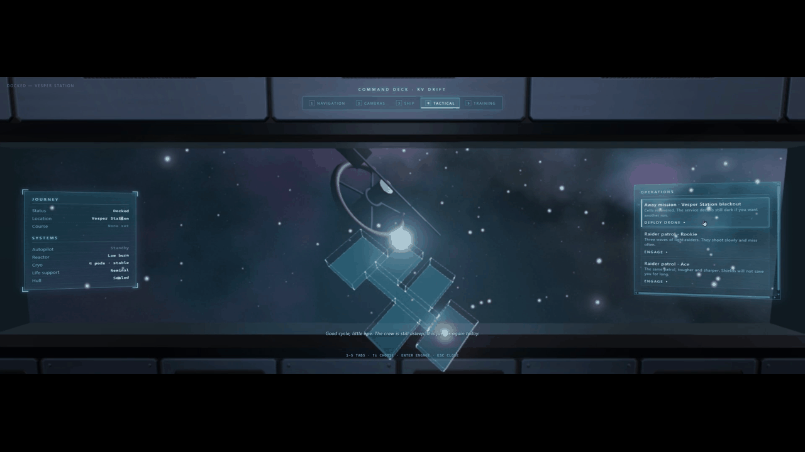
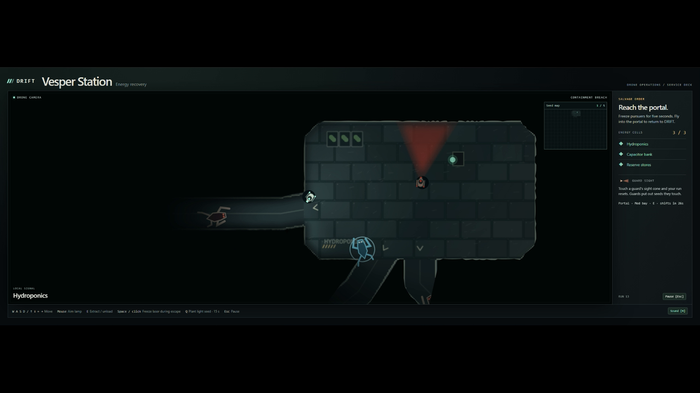
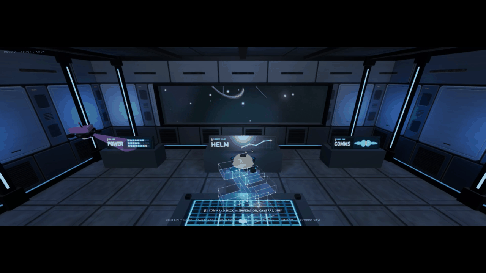

Build in Public, Day 6: I Brought Back More Than Energy Cells
Here’s a quick update on DRIFT, my quiet space game. You’re a small maintenance drone looking after a research ship while the crew sleeps in cryo. On Day 5 the ship learned to warp, and Vesper Station was still a standalone stealth prototype. This time the two are one loop, and you can bring something back with you.
Watch the demo
Vesper is now part of the game
You can set a course from the command deck, warp there, dock, and launch straight into the blackout mission. The ship’s music fades into Vesper’s soundtrack as the drone feed opens.

Two cells get you home. The third one changes the job.
Two energy cells are enough to head home through the airlock. Go for the third and you trigger a containment breach. Three aliens come after you, a hit from your freeze laser buys you five seconds, and your exit portal can jump to another room. The minimap sometimes gives you a three-second look at the whole deck and the exit. That’s just enough time to pick a direction.

A Vesper Scout comes home with you
Make it back with all three and a Vesper Scout joins your ship. It flies its own rounds and stops to scan the consoles. Go back and do it again, and another scout joins in a different colour.

What I actually learned
I first made the Scout a new drone you could equip. Then I thought about what I’d actually want to see after escaping Vesper. I wanted to come back to the same ship and find another little robot already going about its day.
That changed how I thought about the reward. Bringing back the cells gives you something you can see and hear aboard the ship on your next trip. Even a small patrol between two consoles makes the bridge feel busier.
Status
The full loop is playable in my local build. Warp to Vesper, get the cells, escape, and come home to a slightly busier ship. Autosave now remembers your last dock and the companions you’ve brought aboard.
Over to you
What would you want your first companion robot to do while you’re away?
DRIFT is heading towards open source. If you’d like to follow along or get involved, DM me on LinkedIn.